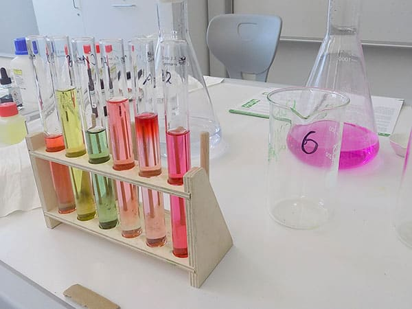

Unser Roboter „Klaus" hat gewonnen
Zwei Monate geschraubt, programmiert, verzweifelt – und beim Wettbewerb dann Nerven aus Stahl. Wie „Klaus" den ersten Platz geholt hat.
Das hier ist unser Blog: von Schülern geschrieben, von Schülern redigiert. Projekte, Ausflüge, Experimente und alles, was zwischen den Stunden passiert.
💡 Hinweis: Die ersten drei Beiträge sind Beispiel-Beiträge – ab jetzt schreiben unsere Schüler selbst. Jede Klasse kann Beiträge einreichen.
Zwei Monate geschraubt, programmiert, verzweifelt – und beim Wettbewerb dann Nerven aus Stahl. Wie „Klaus" den ersten Platz geholt hat.
Hinter den Kulissen unserer Theater-AG: vergessene Requisiten, stille Helden und der Moment, in dem auf der Bühne alles passt.
Unsere Schulband probt im Musikraum – und manchmal hört man sie bis auf den Schulhof. Ein kleiner Mitschnitt.

Herr Lehmann hat heute etwas ausgepackt, was auf keinen Buchdeckel abgebildet ist. Unser Klassenraum hat gebrannt – äh, geglüht. Bericht inklusive Sicherheitsregeln, versprochen.

Wir haben italienische Gäste empfangen – und waren dann selbst in Italien. Pizza, Pasta, Sprachkurs, Freundschaften. So klingt Fremdsprachenlernen bei uns.

Kicktische, Streitschlichter-Bank, Rumgequatsche über Gestern. Eine anthropologische Kurzstudie von jemandem, der jeden Tag mittendrin steht.
Jede Schülerin und jeder Schüler kann mitmachen: Geschichten, Fotos, Videos, Comics – alles willkommen. Sprich das Redaktionsteam an oder schreib der Schule eine Mail, wir melden uns.
Beitrag einreichen ✉Du oder dein Kind könnte bald selbst in diesem Blog schreiben. Die offiziellen Anmeldeinfos gibt es auf der Schul-Website.